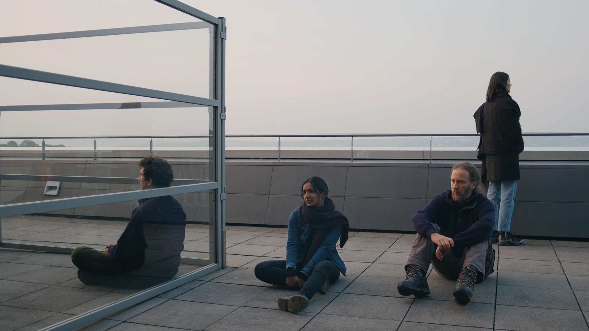

Jessica Arseneau

In progress
Dawns, 2021
Dawns looks at the human body at standstill when the day is about to break. Each video is a 38-minute sequence shot that ends at sunrise.
Camera and light: Kathrin Grzeschniok
Performers: Ralf D‘Atri, Henrik Beeke, Leonie Böhmer, Katharina Geling, Gigo, Fabio Gorchs, Ama Gyaako, Lorenza Elisabeth Kaib, Aljoscha Lahner, Camilla Mücksch, Vanessa Nica Müller, Scherin Rajakunaran, Hannah Stratmann, Philipp Daniel Unger, Anna Wehling.
Many thanks to: Guillaume Arseneault, Jan Ehlen, Thomas Szabo and Makroscope Mülheim.
We acknowledge the support of the Canada Council for the Arts

Current work during the residency at Urbane Künste Ruhr and Ringlokschuppen Ruhr.